第 3 章 卷积神经网络#
本章解决：MLP 处理图像为什么不行（3.1）、CNN 靠什么行——卷积/池化/全连接三大组件（3.2–3.3）、以及两个完整实战（3.4 MNIST、3.7 CIFAR-10）。 承上启下：第 2 章的神经元、权重、激活函数、梯度下降全部沿用，只是把"全连接层"换成了"卷积层"来提特征；本章的调参直觉在第 4 章升级成系统的性能诊断，第 5 章再给你一套现成的经典架构（AlexNet、ResNet……）。
与 MLP 相比，CNN 只换了"特征提取"这一环，其余四件事完全一样：
| 相同点 | 说明 |
|---|---|
| 架构 | 都是神经元逐层堆叠，只是 CNN 多了卷积层与池化层这两种结构 |
| 权重与偏置 | 都是随机初始化、靠训练学习；区别是 MLP 权重是向量形式，卷积层权重以卷积核/滤波器的形式存在 |
| 超参数 | 误差函数、激活函数、优化器的选法与第 2 章相同，本章新增几个 CNN 特有超参 |
| 训练 | 前向得预测 → 与真标签算损失 \((y-\hat{y})\) → 梯度下降反向传播更新权重，一模一样 |
3.0 本章导图#
3.1 用 MLP 做图像分类#
先复习第 2 章的 MLP（多层感知机）架构：神经元逐层堆叠、由权重连接组成，分为输入层、一个或多个隐藏层、输出层（图 3.1）。本节用它解一个真实问题：MNIST 手写数字分类，0~9 共 10 类——顺便看看它为什么撑不起图像任务。
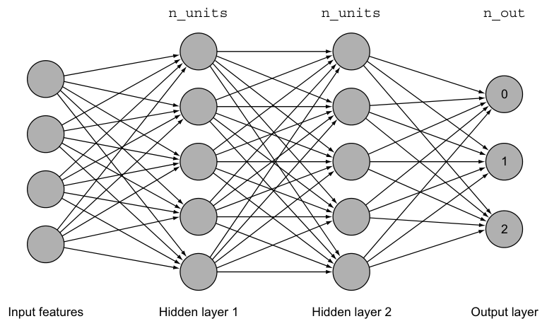
3.1.1 输入层：先展平#
计算机眼里的图像是一个数字矩阵：\(28\times28\) 的图就是 \(28\times28\) 的矩阵，像素值 \(0\sim255\)（0 黑、255 白、中间灰度）。数字 3 在计算机眼里就是 784 个数（图 3.2）。
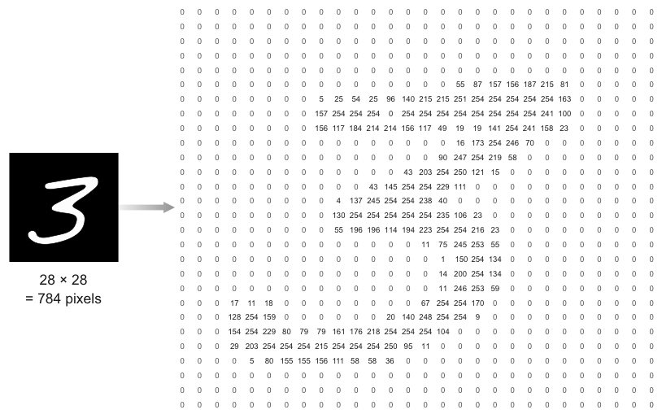
问题来了：MLP 只接受一维向量输入，维度 \((1,n)\)，吃不下 \((x,y)\) 的二维矩阵。所以必须先把图像"压扁"成一条长向量，这叫 Image Flattening（图像展平）：\(28\times28\) 展成 \((1, 784)\)，输入向量按行拼接：
输入层因此有 784 个节点 \(x_1, x_2, \dots, x_{784}\)。Keras 里一个 Flatten 层搞定（它就是输入层，必须传入输入图像的形状）：
# ===== 书 3.1.1 节（Keras 原文）=====
from keras.models import Sequential
from keras.layers import Flatten
model = Sequential()
model.add(Flatten(input_shape=(28, 28))) # 28×28 矩阵 → (1, 784) 向量
侧栏：可视化输入向量（4×4 小例）
把 \(4\times4\) 的小矩阵按行展平成 \((1,16)\) 向量，一行代码的事。若黑=0、白=255，则：
3.1.2 隐藏层#
隐藏层可以有一层或多层、每层任意多神经元——设计这些层就是神经网络工程师的本职。本例随意设计成两个隐藏层、各 512 个节点，别忘了每个隐藏层接 ReLU 激活函数：
# ===== 书 3.1.2 节（Keras 原文）=====
from keras.layers import Dense
model.add(Dense(512, activation='relu'))
model.add(Dense(512, activation='relu'))
3.1.3 输出层#
输出层很直接：分类问题的输出节点数 = 类别数。10 个数字就是 10 个节点，接 softmax：
侧栏：激活函数怎么选
没有万能答案，但有强经验法则：隐藏层绝大多数情况用 ReLU；类别互斥的多分类输出层用 softmax——它输出图像属于每一类的概率。
3.1.4 组装与第一次参数量对账：669,706#
拼起来就是一个 \(784 \to 512 \to 512 \to 10\) 的 MLP（图 3.3）：
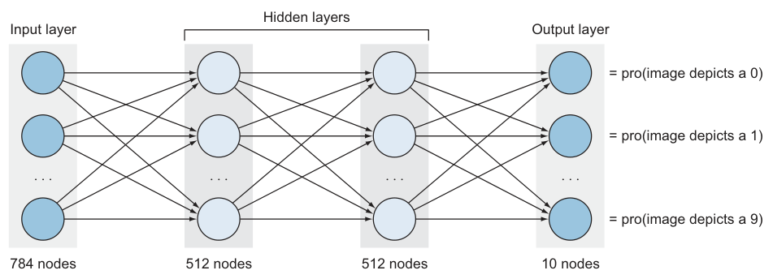
PyTorch 等价实现（参数量对账写进注释）：
# ===== 书 3.1.4 节：Keras 版 → PyTorch 等价 =====
import torch.nn as nn
model = nn.Sequential(
nn.Flatten(), # (28,28) → 784，本层参数 0
nn.Linear(784, 512), nn.ReLU(), # 784×512 + 512 = 401,920
nn.Linear(512, 512), nn.ReLU(), # 512×512 + 512 = 262,656
nn.Linear(512, 10), # 512×10 + 10 = 5,130
) # 合计 669,706，与书图 3.4 完全一致
# Keras→PyTorch 差异①：softmax 的位置。
# Keras 把 activation='softmax' 写进 Dense；PyTorch 惯例是网络输出原始分数（logits），
# 训练时用 nn.CrossEntropyLoss（内部已含 softmax，见 3.7 节），推理时再手动 softmax 取概率。
model.summary() 打印的 Param # 列就是每层要训练的参数（权重）个数，逐层对账：
- Flatten 层 = 0：只负责展平，还没有权重；
- 第 1 个 Dense = \(784\times512 + 512 =\) 401,920（权重 + 每个输出节点 1 个偏置）；
- 第 2 个 Dense = \(512\times512 + 512 =\) 262,656；
- 第 3 个 Dense = \(512\times10 + 10 =\) 5,130；
- 合计 = 401,920 + 262,656 + 5,130 = 669,706。
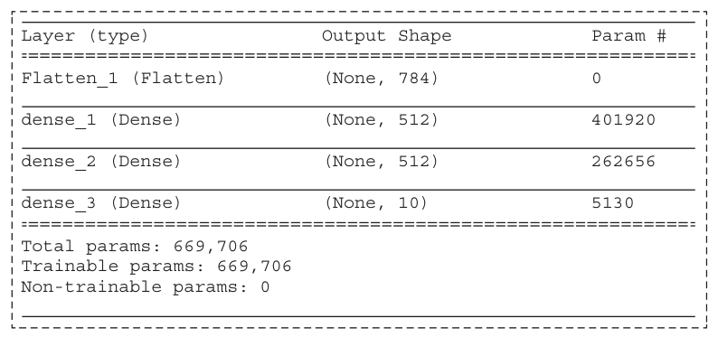
这么小的网络就有 66.9 万个参数要学——再加层、加节点或换大图，这个数会失控。这是 MLP 的第一大问题，下一小节展开。
侧栏：MLP vs CNN 的真实差距
单看 MNIST，MLP 其实能到 ~96%（CNN ~99%），差距不大——因为 MNIST 太"干净"：尺寸统一、数字居中、纯灰度。换成 CIFAR-10 这种稍复杂的数据集（本章 3.7 节会做），MLP 只有 30~40% 准确率；真实世界的杂乱数据上，差距更大。MNIST 是特例，不是常态。
3.1.5 MLP 的两大缺陷#
缺陷一：空间特征丢失#
展平把 2D 图像压成 1D 向量的瞬间，所有二维结构信息全扔了。把输入当一串毫无结构的数字，对 1D 信号也许没问题；但 2D 图像里"相邻像素强相关"这件事，MLP 一无所知——它在找模式时不会把像素值彼此关联起来。CNN 则直接吃原始矩阵，天然理解"离得近的像素关系更紧"。
作者用一个极简实验说明后果：教网络认"正方形"（黑底白方块，图 3.5）。展平后输入是 16 维向量：
训练完成后，网络学会的是"当 \(x_1, x_2, x_5, x_6\) 点火时是正方形"——它记住的是输入节点的编号，不是"正方形"这个形状。换一张正方形出现在别处的图（图 3.6），网络直接不认识。想让它全图都认得？那就得把每个位置的正方形都喂一遍——对复杂问题完全不可扩展。认猫同理：我们希望网络学会"耳朵、鼻子、眼睛"这些特征本身，而不是它们在某张图里的绝对位置（图 3.7）。
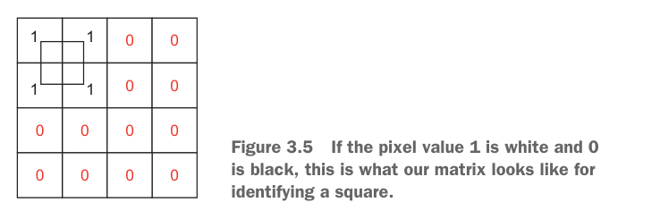 |
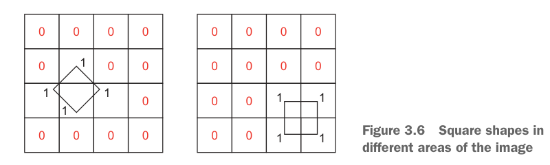 |
图 3.5 黑底白方块 · 图 3.6 正方形挪了位置，MLP 就不认识了（截自原书）
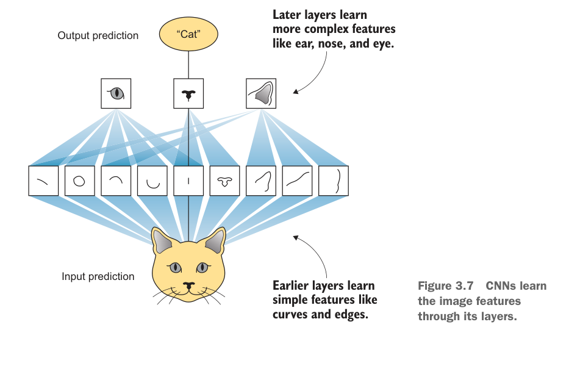
缺陷二：全连接层的参数爆炸#
MLP 的层是全连接（Fully Connected, FC）的：一层每个节点连到前一层和后一层的所有节点，于是每个神经元都要为前一层的每个神经元配一个权重。MNIST 的 \(28\times28\) 小图还扛得住；换成 \(1000\times1000\) 的图像：100 万像素 → 第一隐藏层的每个节点就有 100 万个参数；若第一层有 1000 个神经元，仅第一层就是 10 亿参数。几十上百层堆起来不可想象——不 scale。
CNN 的对策：局部连接（Locally Connected）。每个节点只连前一层的一小块像素（图 3.8 右，这些小块叫滑动窗口 Sliding Windows），参数量骤减。
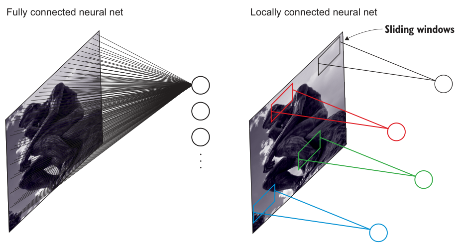
小结：展平丢信息 + 全连接不 scale ⇒ 我们需要一种"不丢二维信息地处理图像"的新架构——卷积神经网络登场。注意：全连接层的问题出在提特征这一步，它的分类能力没问题，所以 CNN 的设计是"卷积提特征 + 全连接做分类"，各留其长。
3.2 CNN 架构#
CNN 逐层提越来越复杂的特征：第一层卷积学基础特征（边缘、线条），下一层学稍复杂的（圆形、方形），再下一层学更复杂的（人脸部件、车轮、猫胡须）……训练机制与神经网络完全相同：权重随机初始化、激活函数、算误差 \((y-\hat{y})\)、反向传播更新——唯一区别是用卷积层替换全连接层来做特征学习。
3.2.1 大局观#
回忆第 1 章的四步流水线（输入 → 预处理 → 特征提取 → ML 模型）：深度学习之前，人们手工提特征再喂给 SVM 之类的分类器；有了神经网络，第 3、4 步可以合并成一个端到端可训练的网络（MLP 或 CNN）。
3.1 节的结论是：全连接层"分类"没问题、"提特征"不行。那就保留能干的，换掉不行的——特征提取换成局部连接的卷积层，分类仍用全连接层。CNN 高层架构（图 3.10）：
- 输入层；
- 卷积层：特征提取；
- 全连接层：分类；
- 输出预测。
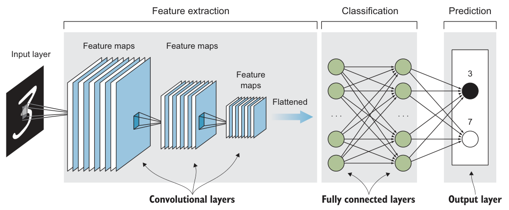
跟着图 3.10 走一遍（任务：区分数字 3 和 7，输出层两个节点）：
- 原始图像直接喂给卷积层；
- 图像流过卷积层，检测模式、提取特征图（Feature Maps）；注意两个趋势：每过一层图像尺寸变小、特征图数量（深度）变多，直到特征提取末端只剩一条"由小特征组成的长数组"。概念上，这就是网络在把原图表示成越来越抽象的特征；
- 特征图展平成向量，喂给全连接层做分类；
- 输出层点亮代表预测类别的节点（3 或 7）。
DEFINITION：在 CNN 里，Feature Map（特征图）是"一个滤波器作用于上一层后的输出"。之所以叫 map，是因为它标记了某种特征在图中的出现位置——CNN 找直线、边缘乃至更复杂的物体，找到就在特征图上"打卡"。每个特征图只负责一件事：这张找直线，那张找曲线。
3.2.2 细看特征提取#
可以把特征提取想象成把大图打碎成小特征块、堆成一摞（图 3.11）：数字 3 深度为 1，被打碎成 4 个含 3 的独特特征的小图后深度就是 4。图像越流越深、越流越小。
注意这只是帮助可视化的比喻——CNN 并不真的剪纸片，它提取的是能把这个物体与其他训练样本区分开的、有意义的特征，并堆成特征数组。
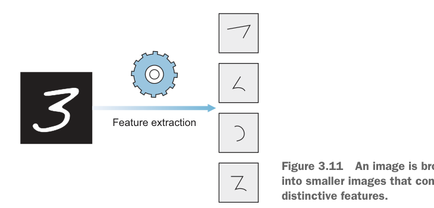
3.2.3 细看分类#
特征提取完成后，全连接层（一个普通 MLP）盯着特征向量逐个判断："第一个特征像条边——可能是 3、7 或者丑版 2；第二个特征有弧线，肯定不是 7……"直到有信心喊出"这是 3"。
侧栏：CNN 如何学模式
别以为 CNN 一步登天从图像直接跳到特征向量——这通常发生在几十上百层里，每过一个隐藏层前进一步：第一层学线条边缘等基础特征，第二层把线条拼成可辨认的形状（角点、圆），更深层学出手、眼睛、耳朵等复杂形状。以人脸为例的简化版：
低级特征（边）重叠组成中级特征（部件），中级特征重叠组成高级特征（整脸）。这个"图案套图案"的概念在第 5 章讨论高级架构时会反复用到。
3.3 CNN 的基本组件#
几乎所有卷积网络都由三种层组成（图 3.12）：卷积层（CONV）、池化层（POOL）、全连接层（FC）。文字表示法：
注意 ReLU 和 softmax 并不是独立层——它们是前一层的激活函数，单独写出来是为了标明设计者选了哪种激活。上面的写法对应"两个卷积层 + 一个全连接层"，卷积层管特征学习，全连接层管分类，数量随意加。
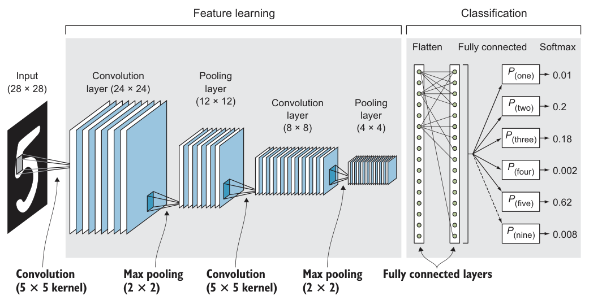
3.3.1 卷积层#
卷积层是 CNN 的核心构件，像一扇特征发现窗口逐像素滑过图像，提取能标识物体的有意义特征。
什么是卷积#
数学上，卷积（Convolution）是"两个函数生成第三个修改过的函数"。在 CNN 语境：第一个函数是输入图像，第二个是卷积滤波器（滤波器/kernel 卷积核），运算结果是一张像素值全新修改过的图。放大看（图 3.13）：滤波器滑过原图，把图切成一个个小块分别处理，拼出修改后的图——特征图。
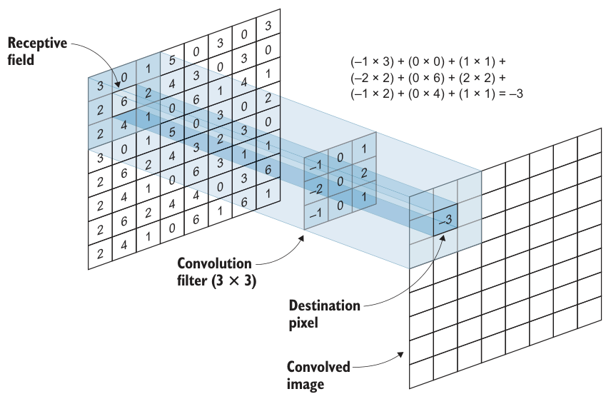
关于卷积核的三件事实：
- 中间那个小矩阵（如 \(3\times3\)）就是卷积滤波器，也叫核（Kernel）；
- 核逐像素滑过原图做数学运算，得到下一层"卷过之后"的图的值；
- 核覆盖的那块图像区域叫感受野（Receptive Field）（图 3.14）。
**核的值是什么？**就是权重——随机初始化、由网络训练学出来。你不用手工设计它。
图 3.13 的算例（感受野左上角 \(\begin{bmatrix}3&0&1\\2&2&2\\2&4&2\end{bmatrix}\) 配对应位置的核元素）：
卷积运算 = 矩阵版加权求和#
这套数学在第 2 章见过——MLP 的加权求和：
CNN 只是把神经元和权重排成了矩阵形状：感受野的每个像素与核的对应像素相乘、全部加起来，得到新图（特征图）中心像素的值（图 3.15）。原书算例：
原书笔误：图 3.15 的 243 应为 261
按上图数字实算：\(-93 + 101 - 52 + 392 - 135 + 48 = 261\)。原书标注 243，与实算差 18，属排版错误；运算过程本身没错。本笔记按实算 261 修正。
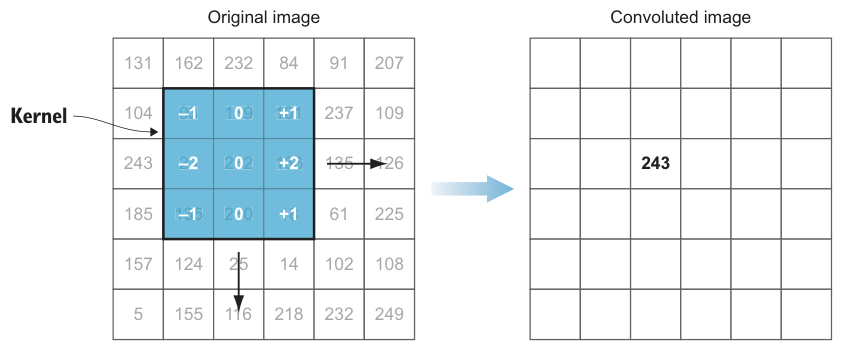
核滑遍全图，每次都做一遍这样的乘加——产出的新图就叫特征图（Feature Map）或激活图（Activation Map）。
滤波器如何通向"学特征"#
回到根本目标：提取特征。图像处理里，滤波器本就用来滤掉不要的信息或放大某类特征——比如这个边缘检测核：
它与输入 \(F(x,y)\) 卷积，生成的特征图会放大边缘。书中的算例：输入块 \(\begin{bmatrix}120&140&120\\225&220&205\\225&250&230\end{bmatrix}\)，
输出 60 > 0——检测到了一个小边缘。不同滤波器检测不同特征：水平边、垂直边、角点……这些滤波器放进卷积层，就产生我们前面说的逐层特征学习：先学边缘直线，后学复杂特征。
卷积层的五个超参数#
一行 Keras 代码就能建一个卷积层，它有五个主要参数：
# ===== 书 3.3.1 节：Keras 原文 =====
from keras.layers import Conv2D
model.add(Conv2D(filters=16, kernel_size=2, strides='1', padding='same',
activation='relu'))
# ===== PyTorch 等价 =====
import torch.nn as nn
conv = nn.Sequential(
nn.Conv2d(in_channels=1, out_channels=16, kernel_size=2, stride=1),
nn.ReLU(),
)
# Keras→PyTorch 差异②：padding='same'。
# 'same' 的含义是"输出尺寸=输入尺寸"。奇数核（3×3）时 PyTorch 写 padding=1 即可；
# 但偶数核（2×2）时 Keras 靠"不对称补零"（上/左补 0 圈、下/右补 1 圈）实现，
# PyTorch 的 padding 只能对称补零，没有直接对偶——须先 F.pad 再卷积（3.7 节项目实操）。
五个参数里 ReLU 已在第 2 章讲过（隐藏层推荐），剩下四个控制输出体积的尺寸与深度：
- Filters（滤波器数量）：本层卷积核的个数，决定输出深度；
- Kernel size（核尺寸）：滤波器矩阵的大小，常见 \(2\times2, 3\times3, 5\times5\)；
- Stride（步幅）：核每次滑几个像素；
- Padding（补零）：图像边缘补几圈 0。
侧栏：调参焦虑缓解剂
深度学习既是科学也是艺术。作为 DL 工程师，你大部分时间不是在造算法，而是在搭架构、设置/实验/调超参。好消息是这活没想象中难——本书会一路给出好的超参起点，并帮你建立"看结果、定该拧哪个旋钮"的直觉。
Filters = 隐藏层宽度。 回忆 MLP：隐藏层有 \(n\) 个神经元（隐藏单元）。CNN 里卷积层就是隐藏层，增加核的个数 = 增加隐藏单元数：一个 \(3\times3\) 的核 = 9 个隐藏单元；再来一个 = 18 个；再加 = 27 个……核越多网络越复杂、能检测的模式越复杂，和 MLP 加神经元一个道理。每个卷积层有若干滤波器，每层滤波器的个数决定下一层的深度——因为每个滤波器产出一张自己的特征图。
Kernel size。 核几乎都是方的，范围从最小 \(2\times2\) 到最大 \(5\times5\)。直觉：小核抓精细细节，大核会漏掉微小细节。理论上核越大"网络越深、学得越好"，但计算复杂度更高、还可能过拟合；更大的核不推荐——丢细节。
Strides。 步幅 = 滑动步长。S=1 逐像素滑，输出尺寸与输入"大致相同"；S=2 隔像素跳，输出"大致减半"；S≥3 实践中罕见。"大致"取决于 padding 怎么处理边缘（见下面的公式）。
Padding。 常叫 Zero Padding（零填充）：在图像四周补零（图 3.19，Padding=2 即补两圈）。最常见用途是保持空间尺寸不变（输入输出同宽高），这样堆更深的网络时宽高不会被一路卷没。
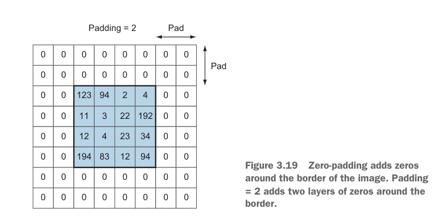
侧栏：stride 与 padding 的总目标
两者合起来只干一件事：要么保住图像全部重要细节传给下一层（stride=1 + padding=same）；要么主动忽略一些空间信息，换计算上的便宜。别忘了后面还有池化层专职降尺寸——stride/padding 是你在"全保留"和"省算力"之间打的第一个方向盘。
拓展：卷积输出尺寸公式
stride/padding 对输出尺寸的影响可以精确计算（原书只给"大致"说法，公式补充如下）：
其中 \(W\) = 输入宽（高同理单独算）、\(K\) = 核尺寸、\(P\) = 补零圈数、\(S\) = 步幅；除不尽时向下取整。三个算例：
- 图 3.12 的网络：\(28\times28\) 输入、\(5\times5\) 核、无 padding、S=1：\(O=(28-5)/1+1=24\) → 卷积层 24×24；\(2\times2\) 池化 \(O=(24-2)/2+1=12\) → 12×12；再卷 \((12-5)/1+1=8\)；再池 \((8-2)/2+1=4\)——与图 3.12 标注的 24→12→8→4 完全一致。
- 3.4 节 MNIST CNN：\(3\times3\) 核 + padding=1（same）、S=1：\(O=(28-3+2)/1+1=28\)，尺寸不变；池化 \((28-2)/2+1=14\)。
- 步幅 2 的取整：\(28\times28\)、\(3\times3\) 核、无 padding、S=2：\((28-3)/2+1=13.5 \to 13\)——余数直接扔掉，设计网络时要提前把尺寸线算好。
拓展：权值共享为什么把参数量打下来
全连接 \(1000\times1000\) 的图 + 1000 个隐藏神经元 = 10 亿参数；而一个 \(3\times3\) 卷积核只有 \(9+1\) 个参数，滑动扫过全图，同一套权重在所有位置复用——这就是权值共享（Weight Sharing）。3.4 节会看到：MNIST CNN 的第一层用 320 个参数就提取了 32 种特征（MLP 同位置要 40 万）。共享还有个副产品：同一特征在图里挪到任何位置都能被同一个核检测到——正好治好 3.1.5 节"正方形挪位置就不认识"的病。
拓展：感受野层层长大
第一层 \(3\times3\) 核的感受野是 \(3\times3\)；第二层输出的每个像素看的是第一层输出的 \(3\times3\) 区域，对应原图 \(5\times5\)……每叠一层 \(3\times3\) 卷积，感受野 +2。所以深层网络不需要大核也能看到大范围上下文；且两层 \(3\times3\)（18 个权重）比一层 \(5\times5\)（25 个权重）参数更少、还多过一次非线性变换——这是现代 CNN 全用小核堆叠的核心原因。
3.3.2 池化层（下采样）#
卷积层越堆越多，深度（特征图数量）随之暴涨，要优化的参数也暴涨——**池化层（Pooling Layer）**就是来刹车的：它用汇总统计函数（最大值、平均值）下采样（Subsampling）输入，缩减传给下一层的参数量。惯例是每 1~2 个卷积层后面跟一个池化层（图 3.20）：
Max pooling 与 Average pooling#
两大主流：**Max Pooling（最大池化）**与 Average Pooling（平均池化）。
Max pooling：与卷积核类似，也是一个固定尺寸、固定步幅的窗口滑过图像——但窗口没有权重、没有任何值，只做一件事：选窗口内的最大像素值传下去，其余忽略（图 3.21：\(2\times2\) 窗口、步幅 2，把 \(4\times4\) 特征图缩成 \(2\times2\)）：
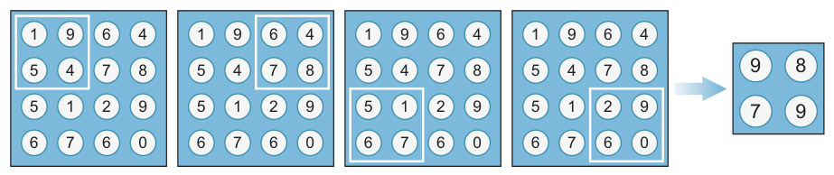
对上一层每一张特征图都做一遍——所以池化缩宽高、保深度：卷积层有 3 张特征图，池化层输出还是 3 张（更小的）特征图。
Global Average Pooling（GAP，全局平均池化）是更极端的降维：不设窗口和步幅，直接对整张特征图的所有像素求平均（\(4\times4\) 图 → 1 个数，书例 \(\frac{1+9+6+4+5+4+7+8+5+1+2+9+6+7+6+0}{16}=5\)）。它把每个 \(H\times W\) 特征图压成 \(1\times1\)，于是整个 3D 数组变成一个向量——天然衔接全连接层。
# ===== 书 3.3.2 节回顾：Keras 原文 → PyTorch 等价 =====
# Keras: model.add(MaxPooling2D(pool_size=(2, 2), strides=2))
pool = nn.MaxPool2d(kernel_size=2, stride=2) # 最大池化
avg = nn.AvgPool2d(kernel_size=2) # 平均池化
gap = nn.AdaptiveAvgPool2d(1) # 全局平均池化：任意 H×W → 1×1
为什么要池化#
复杂项目里 CNN 有几十上百个卷积层、每层几十上百个核，核里全是待学参数——不刹车会失控。池化层保住重要特征传下去的同时缩小图像尺寸，作者给的比喻：池化层就是图像压缩程序——降分辨率，留关键特征。
拓展：为什么池化能抗小平移
max pooling 每个窗口只留最强响应：目标平移一两个像素，最强的激活通常还落在同一个窗口里，输出几乎不变——这就是"对小平移大致不变"的来源，也是第 1 章"统一尺寸/物体任意位置出现也能识别"的机制级解释。代价：精确位置信息被抹掉（本来就是"压缩程序"）。另外池化没有任何可学参数，是免费的降参手段。
侧栏：池化 vs stride/padding——两派之争
池化和 stride 的主目的都是降参数、省训练开销。有人不喜欢池化：论文 "Striving for Simplicity: The All Convolutional Net"（Springenberg, Dosovitskiy, Brox, Riedmiller, arXiv:1412.6806）主张干脆去掉池化层，用带大步幅的卷积层替代降尺寸；在 GAN（第 10 章）等生成模型里，弃用池化也被发现更好。看起来未来架构会少用甚至不用池化，但目前它仍是从一层到下一层的标准下采样手段。
拓展：GAP 在现代架构里的角色
GAP 把每张特征图压成一个数：零参数、天然抗过拟合，还允许网络直接处理任意尺寸输入。ResNet 这类现代架构用"GAP + 一层 softmax 全连接"取代"Flatten + 巨型全连接"，动机就是砍掉 Flatten 处的参数大头——见下一节的参数对账：220,234 个参数里 200,768 个（91%）堆在第一个全连接层。
侧栏：逐层可视化——卷积加深度，池化缩尺寸
设输入 \(28\times28\)（MNIST）：CONV_1 用 4 个核（stride 1、padding same）→ 输出 \(28\times28\times4\)，宽高不变深度变 4；CONV_2 同参数但 12 个核 → \(28\times28\times12\)；池化后 → \(14\times14\times12\)，深度不变宽高减半。卷积层通常保宽高、加深度；池化层保深度、缩宽高——反复堆叠，直到图像变成"一条由小特征组成的长管子"。
3.3.3 全连接层#
卷积 + 池化把所有特征提好、装进"长管子"之后，就轮到分类——这正是第 2 章 MLP 的老本行。当年 MLP 的毛病是"提特征要先展平、丢信息"；现在特征已经提好了，展平一个特征向量对 MLP 来说毫无压力。
全连接层的三件套（图 3.26）：
- 展平输入向量：把特征管展平成 \((1,n)\)。例：\(5\times5\times40\) 的特征管 → \((1, 1000)\)；
- 隐藏层：一层或多层全连接，每层若干神经元；
- 输出层：节点数 = 类别数；多于两类的分类问题用 softmax（10 个数字 → 10 个节点，输出 \(P_0 \dots P_9\)）。
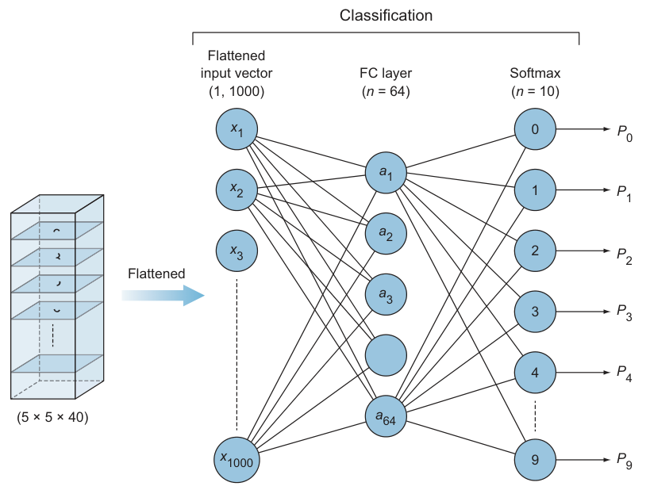
侧栏：名词统一声明
MLP、全连接层（fully connected）、Dense 层，有时还有 feedforward（前馈），说的都是同一个东西——第 2 章那个普通神经网络架构，可互换使用。
3.4 用 CNN 做图像分类（MNIST 实战）#
三个组件都齐了，搭一个真正的 CNN。数据集还是 MNIST——深度学习的"Hello World"。
NOTE：库不重要，概念重要
无论用哪个 DL 库，流程都一样：先在脑子里/纸上设计架构，再逐层堆叠、设参数。Keras、MXNet（以及 TensorFlow、PyTorch 等）各有优劣，概念相通。本书正文以 Keras 为主，本笔记同步给 PyTorch 等价实现。
3.4.1 搭建模型架构#
# ===== 书 3.4.1 节：Keras 原文 =====
from keras.models import Sequential
from keras.layers import Conv2D, MaxPooling2D, Flatten, Dense
model = Sequential()
model.add(Conv2D(32, kernel_size=(3, 3), strides=1, padding='same',
activation='relu', input_shape=(28, 28, 1))) # CONV_1
model.add(MaxPooling2D(pool_size=(2, 2))) # POOL_1
model.add(Conv2D(64, (3, 3), strides=1, padding='same',
activation='relu')) # CONV_2
model.add(MaxPooling2D(pool_size=(2, 2))) # POOL_2
model.add(Flatten()) # Flatten
model.add(Dense(64, activation='relu')) # FC_1
model.add(Dense(10, activation='softmax')) # FC_2
# ===== PyTorch 等价（3×3 为奇数核：padding=1 恰是 Keras 'same' 的对偶）=====
model = nn.Sequential(
nn.Conv2d(1, 32, kernel_size=3, stride=1, padding=1), nn.ReLU(), # (32,28,28)
nn.MaxPool2d(2), # (32,14,14)
nn.Conv2d(32, 64, kernel_size=3, stride=1, padding=1), nn.ReLU(), # (64,14,14)
nn.MaxPool2d(2), # (64,7,7)
nn.Flatten(), # 3136
nn.Linear(3136, 64), nn.ReLU(), # 64
nn.Linear(64, 10), # 10（logits）
)
读 summary 的四条通则：
input_shape只需在第一层给——后面每层的输入就是上一层的输出，模型自己知道；- 每个卷积/池化层的输出都是 3D 张量
(None, height, width, channels)：height/width 是图像此处的尺寸，channels 是深度（特征图数）；第一个None是 batch 维度，Keras 设为"任意 batch_size"； - 越深越小（宽高收缩）、越深越厚（深度增加）；
- 总参数 220,234，对比之前 MLP 的 669,706——砍掉近三分之二。
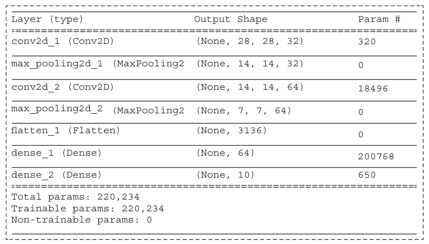
逐行走一遍 shape：
| 层 | 输入 | 输出 | 为什么 |
|---|---|---|---|
| CONV_1（32 核 3×3, same） | \(28\times28\times1\) | \(28\times28\times32\) | stride 1 + same 保尺寸；深度 32 = 32 个滤波器各产一张特征图 |
| POOL_1（2×2） | \(28\times28\times32\) | \(14\times14\times32\) | 尺寸减半，深度不变 |
| CONV_2（64 核 3×3, same） | \(14\times14\times32\) | \(14\times14\times64\) | 同上，深度 64 |
| POOL_2（2×2） | \(14\times14\times64\) | \(7\times7\times64\) | 尺寸减半，深度不变 |
| Flatten | \(7\times7\times64\) | \((1, 3136)\) | \(7\times7\times64=3136\) |
| Dense_1（64） | 3136 | 64 | 全连接 |
| Dense_2（10） | 64 | 10 | 10 类，softmax |
3.4.2 参数量对账：220,234#
参数（Parameters）= 权重，就是网络在梯度下降 + 反向传播里不断更新的东西。MLP 里全连接，参数 = 两层神经元数相乘；CNN 的参数算法不一样，但有公式：
（最后一项是每个滤波器一个偏置。）以 CONV_2 为例，前一层深度是 32：
写进 PyTorch 注释的完整对账（与图 3.27 的 Param # 列逐行一致）：
# CONV_1: 32×(3×3×1) + 32 = 320
# POOL_1 / POOL_2 / Flatten: 0（池化与展平不加参数）
# CONV_2: 64×(3×3×32) + 64 = 18,496
# FC_1: 3136×64 + 64 = 200,768
# FC_2: 64×10 + 10 = 650
# 合计: 320 + 18,496 + 200,768 + 650 = 220,234
可训练与非可训练参数：summary 里的 trainable params 是训练中要优化的权重，本例全部 220,234 个都可训练。后面的章节会用到预训练网络 + 冻结（freeze）部分层（迁移学习，第 6 章），那时 non-trainable 就不再为 0。这个数字还能在训练前帮你估算显存与空间开销。
3.5 加 Dropout 层防过拟合#
三大件（卷积、池化、全连接）之外，还有一类"附加层"专门防过拟合。
3.5.1 什么是过拟合#
ML 表现差的主因就两种：欠拟合（Underfitting）与过拟合（Overfitting）。
- 欠拟合：模型太简单，连训练数据都拟合不了（例：用单个感知机分非线性数据）；
- 过拟合：模型把训练数据背下来了而不是学了特征——训练集误差极低，对没见过的新样本一塌糊涂：训练集表现很好、测试集表现很差（图 3.30）。
我们要的是"刚刚好"。手段之一就是下面的 Dropout 层。
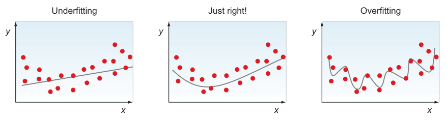
3.5.2 什么是 Dropout 层#
Dropout 按比例"关掉"一层的部分神经元，比例是可调超参。"关掉"指这些神经元不参与本次前向与反向传播。看似自残，实则必要：训练中某些节点会独大（权重过大、主导训练）或犯大错，Dropout 强制全队均衡——每个节点都为同一目标出力，谁也不许太强或太弱，网络因此更有韧性（图 3.31）。
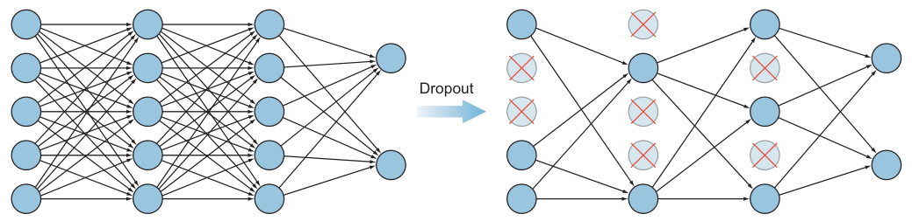
3.5.3 为什么需要 Dropout#
神经元在训练中会发展出相互依赖（codependency）：某个/某几个特征被偏爱、权重集中到少数通路上，导致对训练数据的过拟合。随机关掉一部分节点，逼着其余节点不依赖任何单个特征地学模式——因为任何特征随时可能被丢——权重于是摊到所有特征上，更多神经元得到充分训练。
拓展：Dropout 为什么等价于集成学习（Ensemble）
书中给的视角：集成学习先分别训练一堆弱分类器，测试时把所有成员的响应取平均——各成员学到数据的不同侧面、犯不同的错，合起来更强、更不易过拟合。Dropout 每次丢弃都是一次"随机瘦身"，整个训练过程相当于在训练海量个共享权重的子网络，测试时全部神经元上线、按保留概率缩放输出，近似对所有子网取平均。原论文：Srivastava et al., Dropout: A Simple Way to Prevent Neural Networks from Overfitting, JMLR 2014。
侧栏：直觉——绑住一只手练二头肌
双手举杠铃时，壮的那只手会偷偷多出力，越练越壮、弱的那只越没训练。Dropout 就是"混着练"：先绑右臂只练左臂，再绑左臂只练右臂，如此轮换——一段时间后两只手臂均衡发展。训练神经网络同理：某部分权重过大、垄断训练时，Dropout 关掉一批神经元让其余的训练，下个 epoch 再换一批。
3.5.4 Dropout 放在哪#
标准 CNN = 卷积/池化交替 + 末端全连接。防过拟合的标准做法：在展平之后、全连接层之间插几个 Dropout 层：
为什么只放这里？Dropout 在全连接层里效果好是公认的；它在卷积/池化层里的效果研究得还不充分。
# ===== 书 3.5.4 节：Keras 原文 =====
model.add(Flatten())
model.add(Dropout(rate=0.3)) # 丢 30%
model.add(Dense(64, activation='relu'))
model.add(Dropout(rate=0.5)) # 丢 50%
model.add(Dense(10, activation='softmax'))
# ===== PyTorch 等价（接 3.4.1 的模型，加两处 Dropout）=====
model_do = nn.Sequential(
nn.Conv2d(1, 32, 3, stride=1, padding=1), nn.ReLU(),
nn.MaxPool2d(2),
nn.Conv2d(32, 64, 3, stride=1, padding=1), nn.ReLU(),
nn.MaxPool2d(2),
nn.Flatten(),
nn.Dropout(0.3), # DO：30% 神经元被随机关闭
nn.Linear(3136, 64), nn.ReLU(), # FC_1
nn.Dropout(0.5), # DO：50%
nn.Linear(64, 10), # FC_2（输出 logits，训练配 CrossEntropyLoss）
)
# 注意：PyTorch 的 nn.Dropout 只在 model.train() 时生效，model.eval() 自动关闭；
# Keras 语义相同（只在训练期起作用）。
rate 是"丢弃的输入单元比例"：rate=0.3 → 该层 30% 的神经元随机关闭、其余 70% 训练；下个批次重新随机选。因为是完全随机，有的神经元被关得次数多、有的几乎从不被关——没关系，次数多了平均下来大家待遇相近。rate 本身也是要调的超参。
原书小瑕疵：'in each epoch' 的说法
书中说"30% 的神经元将在每个 epoch 被随机丢弃"。更准确的说法是每个训练批次（batch）的每次前向传播都重新随机采样——粒度是 batch 不是 epoch，Keras/PyTorch 实现均如此。
3.6 彩色图上的卷积（3D 图像）#
第 1 章说过：灰度图在计算机里是 2D 像素值矩阵；彩色图是 3D 矩阵 \(H\times W\times D\)——RGB 图深度为 3（红绿蓝各一通道），\(28\times28\) 彩图就是 \(28\times28\times3\)：三个 2D 矩阵叠成一摞，叠加起来才是完整彩色图（图 3.33）。
NOTE（一般化表述）：图像一律表示为 3D 数组 \(height \times width \times depth\)——灰度图 depth=1，彩色图 depth=3。
3.6.1 彩色图上怎么做卷积#
还是老三样：滑核、乘加、产特征图——只是核本身也变 3D 了：每个颜色通道对应核的一层（图 3.34）。
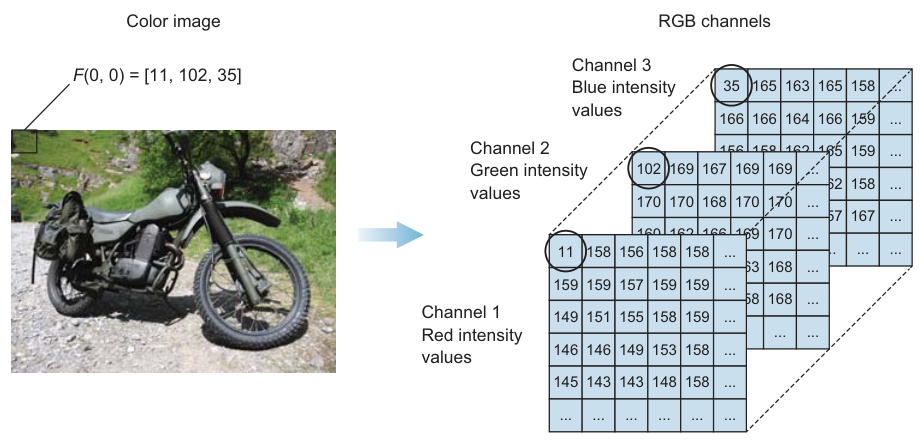
具体步骤（图 3.35）：
- 三个颜色通道各有自己的对应滤波器层（\(w_0[:,:,0]\) 红、\(w_0[:,:,1]\) 绿、\(w_0[:,:,2]\) 蓝）；
- 每层滤波器在自己的通道上滑动、逐元素相乘再求和，各得一个数（书例：红 = 0、绿 = 1、蓝 = -1）；
- 三个数加总得到特征图上一个节点的值——别忘了加偏置（书例 +1）：\(0 + 1 + (-1) + 1 = 1\)；
- 按步幅滑过（一次 1 像素或更多），重复直到填满整张特征图。
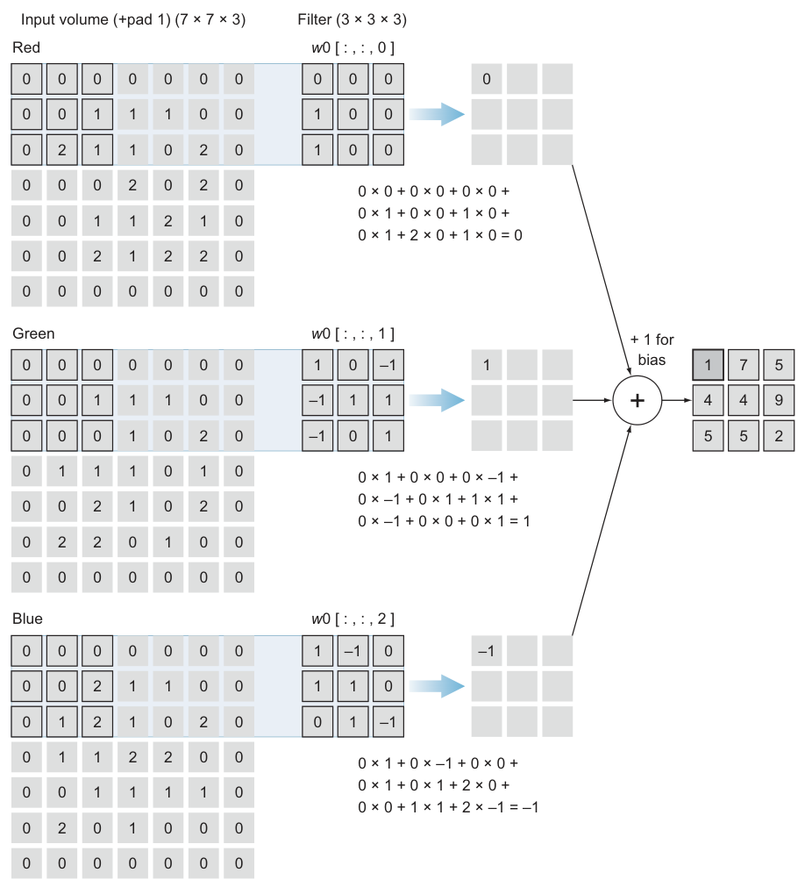
图 3.35 / 3.37 的隐含步幅
图中输入体积是补零后的 \(7\times7\times3\)、核 \(3\times3\times3\)、输出 \(3\times3\times2\)——用输出尺寸公式实算 \((7-3)/2+1=3\)，说明图按 stride=2 画的；若按 stride=1 会得 \(5\times5\)。原书未在图上标注 stride，读图别困惑。
# ===== 书 3.6 节：彩色图卷积（PyTorch）=====
conv_rgb = nn.Conv2d(in_channels=3, out_channels=16, kernel_size=3, padding=1)
# 一个滤波器的权重 = 3×3×3 = 27 个 + 1 个偏置
# 本层参数 = 16×27 + 16 = 448（对比灰度输入：16×(3×3×1) + 16 = 160）
3.6.2 计算复杂度怎么办#
参数量跟着涨：灰度图一个 \(3\times3\) 核 9 个参数；彩色图每个核是 \(3\times3\times3=27\) 个参数，网络要优化的参数更多、内存占用更大。
彩色图信息更多，既带来计算开销，也对某些任务真的有用——取舍权在你：
- 很多物体靠明暗模式就能认出来，颜色可有可无（原书图 3.36：街景里自行车、云、行人的形状全靠明暗定义）——此时转灰度省钱省内存；
- 有些任务颜色是关键证据：皮肤癌检测依赖皮肤红色（红疹）；
- 作者给的判断法：如果人类靠颜色更容易识别，算法大概也需要彩色。
和灰度图一样：加多少个滤波器，就产多少张特征图。图 3.37 中 \(7\times7\times3\) 的输入配 2 个 \(3\times3\times3\) 滤波器，输出深度就是 2（\(3\times3\times2\)）。
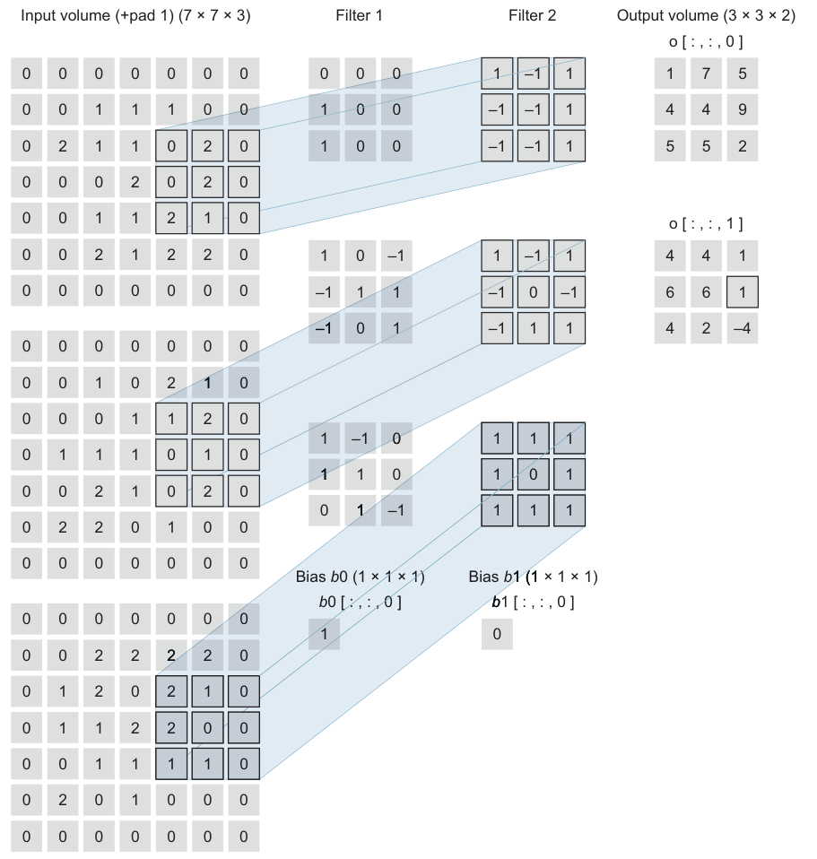
侧栏：关于 CNN 架构的重要收尾忠告
强烈建议多看现成架构——早就有人把东西拆拆装装、试出了什么好使。实际工作中（除非做研究），先拿一个与你的问题相似的现成架构，再在你的数据上调。第 4 章讲如何诊断网络性能并给调参策略；第 5 章讲最流行的 CNN 架构。本节要带走的两点：①概念上懂 CNN 怎么搭；②层多 → 神经元多 → 学习能力强，但计算成本随之而来——按训练数据的规模与复杂度选层，简单任务未必需要很多层。
3.7 项目：彩色图像分类（CIFAR-10）#
端到端实战：训练 CNN 分类 CIFAR-10 数据集——CV 领域的经典目标识别数据集，是 80 Million Tiny Images（Torralba, Fergus, Freeman, IEEE TPAMI 2008）的子集：60,000 张 \(32\times32\) 彩色图、10 类、每类 6,000 张。
flowchart LR
A["Step 1<br/>加载数据集"] --> B["Step 2<br/>预处理：/255 · one-hot · 切分"]
B --> C["Step 3<br/>定义模型架构"]
C --> D["Step 4<br/>compile：损失 + 优化器 + 指标"]
D --> E["Step 5<br/>训练（盯 val_loss）"]
E --> F["Step 6<br/>加载最优权重"]
F --> G["Step 7<br/>评估测试集"]Step 1：加载数据集#
# ===== 书 3.7 节 Step 1（Keras 原文）=====
import keras
from keras.datasets import cifar10
(x_train, y_train), (x_test, y_test) = cifar10.load_data()
import numpy as np
import matplotlib.pyplot as plt
fig = plt.figure(figsize=(20, 5))
for i in range(36):
ax = fig.add_subplot(3, 12, i + 1, xticks=[], yticks=[])
ax.imshow(np.squeeze(x_train[i]))
# ===== PyTorch 等价 =====
import torchvision
import torchvision.transforms as T
from torch.utils.data import DataLoader
transform = T.ToTensor() # 顺带完成 /255：[0,255] → [0,1]
trainval = torchvision.datasets.CIFAR10('./data', train=True, transform=transform)
test_set = torchvision.datasets.CIFAR10('./data', train=False, transform=transform)
Step 2：图像预处理#
按数据集与问题做清理，让数据"配上"学习模型。先记一条梯度下降的硬规矩（图 3.38）：
TIP：用梯度下降时，所有特征必须尺度相近，否则收敛要慢得多。特征同尺度时等高线是匀称的碗（左）；一个特征远小于另一个时是拉长的碗（右），下降路径来回震荡。
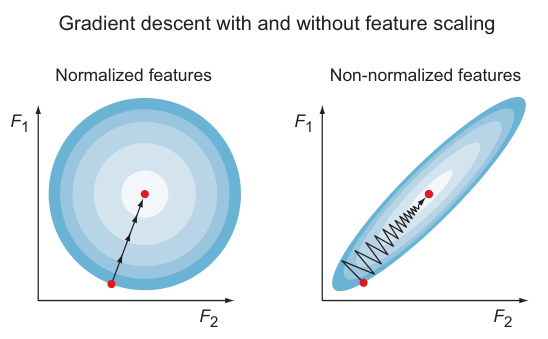
① 重缩放图像：像素除以 255，压进 \([0,1]\)：
# ===== 书 3.7 节 Step 2（Keras 原文）=====
x_train = x_train.astype('float32') / 255
x_test = x_test.astype('float32') / 255
② 准备标签（one-hot 编码）：图像已变成数字矩阵，标签还是文本（10 类：airplane, automobile, bird, cat, deer, dog, frog, horse, ship, truck）。**One-hot Encoding（独热编码）**把类别变量变成数字形式：
| 图像 | 标签 | → | airplane | bird | cat | deer | dog | frog | horse | ship | truck | automobile |
|---|---|---|---|---|---|---|---|---|---|---|---|---|
| image_1 | dog | → | 0 | 0 | 0 | 0 | 1 | 0 | 0 | 0 | 0 | 0 |
| image_2 | automobile | → | 0 | 0 | 0 | 0 | 0 | 0 | 0 | 0 | 0 | 1 |
| image_3 | airplane | → | 1 | 0 | 0 | 0 | 0 | 0 | 0 | 0 | 0 | 0 |
# ===== 书 3.7 节 Step 2（Keras 原文）=====
from keras.utils import np_utils
num_classes = len(np.unique(y_train))
y_train = keras.utils.to_categorical(y_train, num_classes)
y_test = keras.utils.to_categorical(y_test, num_classes)
侧栏：标签矩阵
one-hot 把 \((1\times n)\) 的标签向量变成 \((n\times10)\) 的标签矩阵：1,000 张图的标签矩阵就是 \(1000\times10\)。所以下一步定义网络时，输出 softmax 层要 10 个节点，每个节点输出一类的概率。
PyTorch 差异③：标签不需要 one-hot
nn.CrossEntropyLoss 直接吃 0~9 的类别索引，内部完成 log-softmax + NLL，所以 PyTorch 版跳过 to_categorical；预测结果若要概率再手动 softmax。（one-hot 的知识仍然要懂——很多数据管线仍用它。）
③ 切分训练/验证集：除了 train/test，还要从训练数据里再切一块验证集（图 3.39）。三块数据各司其职：
| 数据集 | 用途 |
|---|---|
| Training 训练集 | 训练模型 |
| Validation 验证集 | 调超参时提供无偏的拟合评估；一旦验证集的表现被纳入模型配置，这个评估就逐渐"不再无偏" |
| Test 测试集 | 对最终模型提供无偏评估 |
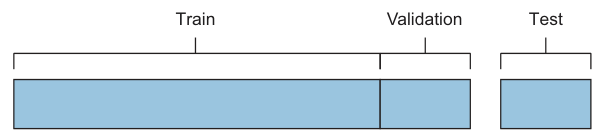
# ===== 书 3.7 节 Step 2（Keras 原文）：前 5000 张作验证集 =====
(x_train, x_valid) = x_train[5000:], x_train[:5000]
(y_train, y_valid) = y_train[5000:], y_train[:5000]
# 结果：45,000 train / 5,000 valid / 10,000 test
# ===== PyTorch 等价 =====
from torch.utils.data import random_split
train_set, valid_set = random_split(trainval, [45000, 5000])
train_loader = DataLoader(train_set, batch_size=32, shuffle=True)
valid_loader = DataLoader(valid_set, batch_size=32)
Step 3：定义模型架构#
DL 项目的基本套路：把实现"数据蒸馏"的简单层堆在一起（卷积、池化、全连接 + 激活函数）。架构怎么定？
侧栏：如何决定网络架构
作者的建议：读流行架构（AlexNet、ResNet、Inception——第 5 章详述），提炼设计决策背后的关键想法，再动手玩自己的项目，培养直觉。四条实用守则：
- 层越多（至少理论上）学得越好，但计算/内存成本上涨 + 过拟合风险；
- 图像流过网络：深度增加、宽高收缩，逐层进行；
- 经验起点：2~3 层 \(3\times3\) 卷积 + \(2\times2\) 池化，反复堆到图像变成合理尺寸（如 \(4\times4\) 或 \(5\times5\)），再接几层全连接做分类；
- 别重造轮子：查文献里别人用什么超参，选一个已被验证有效的架构当起点，再微调到自己的场景。
本书选择：缩小版的 AlexNet（图 3.40，5 个卷积/池化层 + 3 个全连接层——2012 年 ImageNet 竞赛冠军，第 5 章详解）：
原书笔误：AlexNet 夺冠年份
原书正文写 AlexNet "won the ImageNet challenges in 2011"——实为 ILSVRC 2012（Top-5 错误率 15.3%，比第二名低了约 10 个百分点），第 5 章详述。
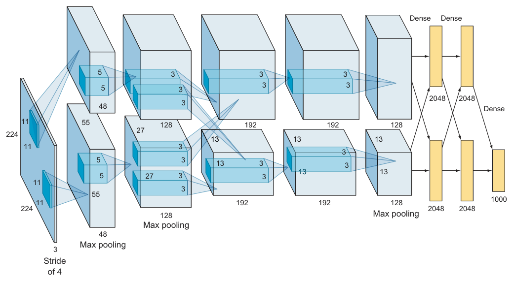
我们的缩小版堆 3 个卷积层 + 2 个全连接层（图 3.41）：
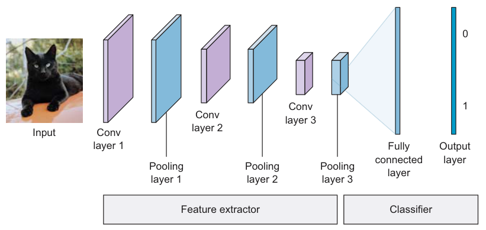
# ===== 书 3.7 节 Step 3：Keras 原文 =====
from keras.models import Sequential
from keras.layers import Conv2D, MaxPooling2D, Flatten, Dense, Dropout
model = Sequential()
model.add(Conv2D(filters=16, kernel_size=2, padding='same',
activation='relu', input_shape=(32, 32, 3))) # CONV_1
model.add(MaxPooling2D(pool_size=2)) # POOL_1
model.add(Conv2D(filters=32, kernel_size=2, padding='same',
activation='relu')) # CONV_2
model.add(MaxPooling2D(pool_size=2)) # POOL_2
model.add(Conv2D(filters=64, kernel_size=2, padding='same',
activation='relu')) # CONV_3
model.add(MaxPooling2D(pool_size=2)) # POOL_3
model.add(Dropout(0.3)) # DO（卷积块后）
model.add(Flatten()) # Flatten
model.add(Dense(500, activation='relu')) # FC_1
model.add(Dropout(0.4)) # DO（全连接之间）
model.add(Dense(10, activation='softmax')) # FC_2
# ===== PyTorch 等价：小 AlexNet（含 Keras 'same' 偶数核的手工补零）=====
import torch
import torch.nn as nn
import torch.nn.functional as F
class SmallAlexNet(nn.Module):
"""Keras 的 kernel_size=2 + padding='same' 靠不对称补零（下/右各 1 圈）实现；
PyTorch 的 padding 只能对称，故用 F.pad(x, (0,1,0,1)) 手工复刻，
才能保住书中的尺寸线 32 → 32 → 16 → 16 → 8 → 8 → 4。"""
def __init__(self):
super().__init__()
self.conv1 = nn.Conv2d(3, 16, kernel_size=2) # 16×(2×2×3) + 16 = 208
self.conv2 = nn.Conv2d(16, 32, kernel_size=2) # 32×(2×2×16) + 32 = 2,080
self.conv3 = nn.Conv2d(32, 64, kernel_size=2) # 64×(2×2×32) + 64 = 8,256
self.fc1 = nn.Linear(64 * 4 * 4, 500) # 1024×500 + 500 = 512,500
self.fc2 = nn.Linear(500, 10) # 500×10 + 10 = 5,010
self.drop1, self.drop2 = nn.Dropout(0.3), nn.Dropout(0.4)
@staticmethod
def same_pad(x): # 复刻 Keras 'same'（偶数核）的下/右补零
return F.pad(x, (0, 1, 0, 1))
def forward(self, x):
x = F.max_pool2d(F.relu(self.conv1(self.same_pad(x))), 2) # (16,32,32)→(16,16,16)
x = F.max_pool2d(F.relu(self.conv2(self.same_pad(x))), 2) # (32,16,16)→(32,8,8)
x = F.max_pool2d(F.relu(self.conv3(self.same_pad(x))), 2) # (64,8,8)→(64,4,4)
x = self.drop1(x)
x = torch.flatten(x, 1) # → 1024 = 4×4×64
x = self.drop2(F.relu(self.fc1(x)))
return self.fc2(x) # 输出 logits（softmax 并入 CrossEntropyLoss）
model = SmallAlexNet()
total = sum(p.numel() for p in model.parameters()) # 528,054，与书图 3.42 一致
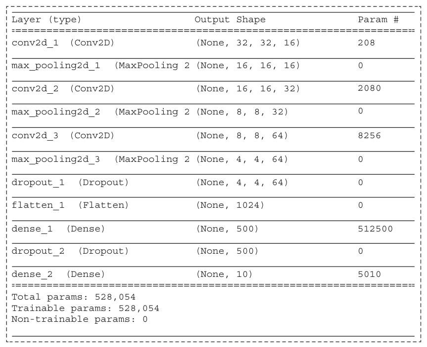
对账（与图 3.42 的 Param # 列一致）：CONV_1 = 16×(2×2×3)+16 = 208；POOL 全 0；CONV_2 = 32×(2×2×16)+32 = 2,080；CONV_3 = 64×(2×2×32)+64 = 8,256；Dropout/Flatten 全 0；FC_1 = 1024×500+500 = 512,500；FC_2 = 500×10+10 = 5,010；合计 528,054。注意形状变化：\(32\times32\times3 \to 32\times32\times16 \to 16\times16\times16 \to 16\times16\times32 \to 8\times8\times32 \to 8\times8\times64 \to 4\times4\times64 \to\) 展平 1024。
Step 4：compile 模型#
训练前再定三个超参数：
| 超参数 | 作用 | 书中取值 |
|---|---|---|
| Loss function 损失函数 | 网络在训练数据上衡量自身表现的尺子 | categorical_crossentropy |
| Optimizer 优化器 | 更新参数以压低损失值的机制（第 2 章讲过的随机梯度下降家族） | rmsprop |
| Metrics 指标 | 训练/测试过程中监控的指标 | accuracy |
# ===== 书 3.7 节 Step 4（Keras 原文）=====
model.compile(loss='categorical_crossentropy', optimizer='rmsprop',
metrics=['accuracy'])
# ===== PyTorch 等价 =====
criterion = nn.CrossEntropyLoss() # 含 softmax 的多分类交叉熵
optimizer = torch.optim.RMSprop(model.parameters()) # rmsprop
# 指标（accuracy）在验证/评估循环里手算，见 Step 5/7。
Step 5：训练模型#
Keras 用 model.fit() 一行开训，配 ModelCheckpoint 回调：每轮只在 val_loss 创新低时保存权重（save_best_only=True）—— epochs=100、batch_size=32：
# ===== 书 3.7 节 Step 5（Keras 原文）=====
from keras.callbacks import ModelCheckpoint
checkpointer = ModelCheckpoint(filepath='model.weights.best.hdf5', verbose=1,
save_best_only=True)
hist = model.fit(x_train, y_train, batch_size=32, epochs=100,
validation_data=(x_valid, y_valid), callbacks=[checkpointer],
verbose=2, shuffle=True)
# ===== PyTorch 等价：手写训练循环 + "只在提升时存权重" =====
best_val = float('inf')
for epoch in range(100): # epochs=100
model.train()
for xb, yb in train_loader: # batch_size=32，shuffle=True
optimizer.zero_grad()
loss = criterion(model(xb), yb) # CrossEntropyLoss（softmax 已并入）
loss.backward()
optimizer.step()
model.eval() # 关闭 Dropout
with torch.no_grad():
vl = sum(criterion(model(xb), yb).item() * len(yb)
for xb, yb in valid_loader) / len(valid_set)
if vl < best_val: # 复刻 ModelCheckpoint(save_best_only=True)
best_val = vl
torch.save(model.state_dict(), 'model.best.pt')
print(f'epoch {epoch + 1}: val_loss={vl:.4f}')
训练日志（图 3.43）是最重要的"仪表盘"，看几个关键点：
loss/acc是训练集的误差与准确率；val_loss/val_acc是验证集的。理想状态：val_loss 一路降、val_acc 一路升——说明网络每轮都在真学；- 第 1~6 轮 val_loss 持续改善（1.3582 → 1.2224 → 1.1210 → 1.1072 → 0.9738 → 0.9550），每轮都存下"迄今最优"权重；
- 第 7 轮 val_loss 从 0.9445 飙到 1.1300——没改善，不保存。此刻停训并加载第 6 轮权重，就是目前最好的模型；
- 第 8 轮又改善（0.9178）继续存；第 9 轮没改善……若 12 轮后停训，加载到的是第 10 轮的权重（val_loss=0.9157、val_acc=0.6936），可预期测试准确率接近 69%。
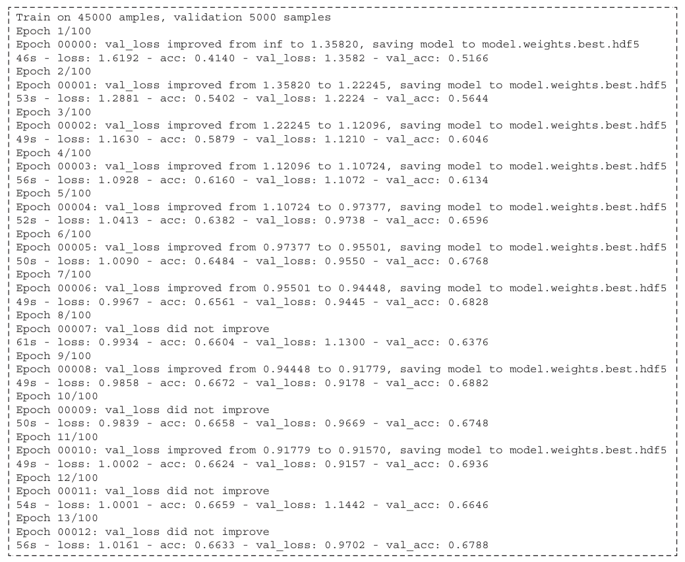
原书日志排版瑕疵
图 3.43 首行 "Train on 45000 amples" 缺了字母（应为 samples），是原书截图排版问题，不影响内容。
侧栏：盯住这些常见现象（3 种症状 → 3 个药方）
flowchart TD
A["看训练日志"] --> B{"val_loss 上蹿下跳？<br/>0.8 → 0.9 → 0.7 → 1.0"}
B -- 是 --> C["学习率太大，下不了误差山<br/>→ 调低学习率，训练更久"]
A --> D{"val_loss 一直不降？"}
D -- 是 --> E["模型太简单，欠拟合<br/>→ 加隐藏层/加复杂度"]
A --> F{"loss 在降但 val_loss 不降了？"}
F -- 是 --> G["开始过拟合训练集<br/>→ 上 Dropout 等防过拟合手段（第 4 章还有更多）"]Step 6：加载最优权重#
# ===== 书 3.7 节 Step 6 =====
# Keras: model.load_weights('model.weights.best.hdf5')
model.load_state_dict(torch.load('model.best.pt')) # PyTorch 等价
Step 7：评估模型#
# ===== 书 3.7 节 Step 7 =====
# Keras:
# score = model.evaluate(x_test, y_test, verbose=0)
# print('\n', 'Test accuracy:', score[1])
# ===== PyTorch 等价 =====
import torch
model.eval()
correct = 0
with torch.no_grad():
for xb, yb in DataLoader(test_set, batch_size=32):
pred = model(xb).argmax(dim=1)
correct += (pred == yb).sum().item()
print('Test accuracy:', correct / len(test_set)) # 约 0.70
测试准确率约 70%——不算差，但大有提升空间：试着加卷积层、池化层改架构。第 4 章专讲如何搭项目与调超参，章末我们会回到这个项目，把准确率提到 90% 以上。
坑与陷阱#
8 个容易踩的坑
- 别用 MLP 啃原始图像：展平先丢空间信息，全连接再炸参数（10 亿级）；"MNIST 上 MLP 也有 96%"是干净数据的特例，CIFAR-10 上只有 30~40%。
- 参数大头几乎总在 Flatten 后的第一个全连接层：MNIST CNN 的 220,234 里有 200,768（91%）在 Dense_1——降参先动全连接（换 GAP 或减节点）。
- 卷积保深度、池化缩宽高，别搞反：filters 数决定下一层深度；池化永远不改变深度。
- 输出尺寸公式除不尽要向下取整：(28−3)/2+1=13.5→13；stride=2 的网络要提前算好尺寸线，否则 Flatten 时对不上。
- 偶数核没有 PyTorch 版 'same'：Keras 的 2×2 + same 是不对称补零；PyTorch 要
F.pad(x,(0,1,0,1))手工复刻，直接padding=1会得到另一条尺寸线。 - PyTorch 别再接 Softmax 层：
CrossEntropyLoss已含 log-softmax，输出层再叠一个 softmax = 双重压缩，梯度变差训练变慢。 - Dropout 只放在全连接层之间（Flatten 之后），卷积/池化层里效果研究尚不充分；记得
model.eval()关闭它再做验证/测试。 - 看日志下药，别乱调：val_loss 震荡 → 降学习率；不降 → 欠拟合加层；loss 降而 val_loss 不降 → 过拟合上 Dropout。
速览#
- MLP 啃图像两大缺陷：展平丢空间特征 + 全连接参数爆炸（669,706 起，大图到 10 亿级）。
- CNN = 卷积层提特征 + 池化层降维 + 全连接层分类；训练机制（前向、损失、反向传播）与 MLP 完全相同。
- 卷积 = 感受野与核逐元素相乘再求和（+偏置）；核的值就是权重，随机初始化、训练学出；每个核产出一张特征图。
- 输出尺寸公式 \(O=(W-K+2P)/S+1\)（向下取整）；stride 1 + same 保尺寸，stride 2 近乎减半。
- filters 数 = 下一层深度 = 特征图张数；一个 \(3\times3\) 核 = 9 个隐藏单元；核常见 \(2\times2\sim5\times5\)，小核抓细节。
- 池化：max/average，窗口无权重，缩宽高保深度；GAP 整图求平均把 3D 数组压成向量；池化抗小平移、零参数。
- 参数量公式：\(\text{filters} \times K \times K \times \text{depth}_{prev} + \text{filters}\)；池化与 Flatten 层参数为 0。
- Dropout：训练时按 rate 随机关神经元，打散共依赖、近似集成学习；放 Flatten 之后的 FC 层之间。
- 彩色图卷积：核变 3D（\(3\times3\times3=27\) 权重），逐通道卷积求和 + 偏置；颜色是不是关键特征由任务决定（肉眼测试）。
- MNIST CNN（220,234 参数）vs MLP（669,706）：参数砍 ⅔、准确率 99% vs 96%；CIFAR-10 小 AlexNet（528,054 参数）~70%，第 4 章调到 90%+。
术语速查#
| 英文 | 中文 | 一句话 |
|---|---|---|
| Convolution | 卷积 | 两个函数（图像 × 核）生成第三个函数（特征图）的运算 |
| Kernel / Filter | 卷积核 / 滤波器 | 滑过图像的权重小矩阵，网络要学的就是它 |
| Feature Map / Activation Map | 特征图 / 激活图 | 一个滤波器作用后的输出，标记某特征出现的位置 |
| Receptive Field | 感受野 | 核当前覆盖、参与卷积的那块图像区域 |
| Convolutional Layer (CONV) | 卷积层 | 特征发现窗口，CNN 的核心构件 |
| Pooling Layer (POOL) | 池化层 | 用 max/average 下采样，缩尺寸保深度、零参数 |
| Max / Average Pooling | 最大 / 平均池化 | 窗口取最大值 / 平均值传下去 |
| Global Average Pooling (GAP) | 全局平均池化 | 整张特征图求平均：H×W×D → 1×1×D 向量 |
| Stride | 步幅 | 核每次滑动的像素数；2 以上输出近乎减半 |
| Padding (Zero Padding) | （零）填充 | 图像四周补 0，保持输出与输入同尺寸 |
| Sliding Window | 滑动窗口 | 局部连接中每个节点看到的前一层小块 |
| Locally Connected | 局部连接 | 节点只连前一层的子集，省参数 |
| Flatten | 展平层 | 多维矩阵/特征管 → 一维向量，不加参数 |
| Fully Connected / Dense / MLP | 全连接 / Dense / MLP | 同一种普通神经网络层的不同叫法 |
| Weight Sharing | 权值共享 | 同一套核权重在图像所有位置复用（拓展概念） |
| Dropout | 丢弃法 | 训练时随机关掉 rate 比例神经元防过拟合 |
| Overfitting / Underfitting | 过拟合 / 欠拟合 | 背题不会举一反三 / 太简单连训练集都学不会 |
| One-hot Encoding | 独热编码 | 类别标签 → 0/1 向量（PyTorch 的 CrossEntropyLoss 可省略） |
| Validation Set | 验证集 | 调超参用的"无偏"评估数据（与测试集分工） |
| ModelCheckpoint | 模型检查点 | 只在 val_loss 创新低时保存最优权重的回调 |
| Categorical Crossentropy | 类别交叉熵 | 多分类损失；PyTorch 里由 CrossEntropyLoss 兼任 softmax |
| Epoch / Batch Size | 轮 / 批大小 | 全训练集过一遍 / 每次前向的样本数 |
覆盖自查#
原书小节 → 笔记位置
| 原书 | 笔记 |
|---|---|
| 章首（本章路线 + MLP/CNN 四个相同点） | 导语表 + 3.0 导图 |
| 3.1.1 输入层 + 侧栏"可视化输入向量" | §3.1.1（numpy 演示） |
| 3.1.2 隐藏层 + 侧栏"选激活函数" | §3.1.2–3.1.3 |
| 3.1.3 输出层 | §3.1.3 |
| 3.1.4 组装 + 参数对账 669,706 + 侧栏"MLPs vs. CNNs" | §3.1.4 |
| 3.1.5 两大缺陷（空间特征丢失 / 全连接）+ 图 3.5–3.8 | §3.1.5 |
| 3.2.1 大局观 + DEFINITION 特征图 | §3.2.1 |
| 3.2.2 细看特征提取 | §3.2.2 |
| 3.2.3 细看分类 + 侧栏"CNN 如何学模式" | §3.2.3 |
| 3.3 三组件总览 + 文字表示法 | §3.3 引言 |
| 3.3.1 卷积层（卷积运算/感受野/边缘核/四超参）+ 侧栏"调参" | §3.3.1（公式与权值共享为拓展） |
| 3.3.2 池化层（max/avg/GAP）+ 侧栏"池化 vs stride/padding" + 回顾 + 逐层可视化侧栏 | §3.3.2 |
| 3.3.3 全连接层 + 侧栏"名词统一" | §3.3.3 |
| 3.4.1 搭架构 + 图 3.27 逐行解读 | §3.4.1 |
| 3.4.2 参数公式 220,234 + 可训练/非可训练 | §3.4.2 |
| 3.5.1–3.5.4 过拟合与 Dropout + 侧栏"二头肌直觉" | §3.5 |
| 3.6.1 彩色图 3D 卷积 + 图 3.33–3.35 | §3.6.1 |
| 3.6.2 计算复杂度 + 图 3.36–3.37 + 收尾忠告侧栏 | §3.6.2 |
| 3.7 项目 Step 1–7（含图 3.38–3.43、标签矩阵侧栏、架构决策侧栏、训练现象侧栏） | §3.7 各 Step |
| 章末 Summary（6 条） | §速览（无重复摘抄） |